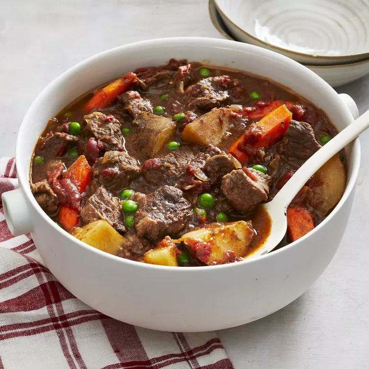

https://www.allrecipes.com/recipe/12900/christmas-eve-beef-stew/
Christmas Eve Beef Stew

This is a family tradition for Christmas Eve! Serve with a green salad and a loaf of warm bread. It can also be made in a slow cooker.